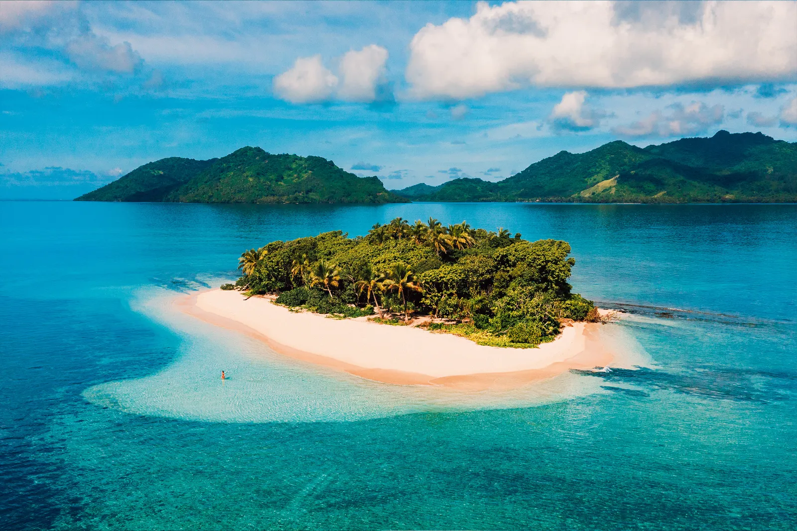

MEMORABLE
GETAWAYS
Escape to a world of pure relaxation and adventure – where pristine beaches meet lush forests, vibrant cities, and tranquil retreats. Your perfect getaway awaits.
Read MoreEscape to a world of pure relaxation and adventure – where pristine beaches meet lush forests, vibrant cities, and tranquil retreats. Your perfect getaway awaits.
Read MoreBy Maggie ShipStead April 8 2023
I was expecting to spend most of my time in Fiji, a nation of more than 300 islands, on or in the water, but I’d mostly been thinking of the ocean. Yet on a warm morning in May, I found myself deep within the mountainous interior of Fiji’s largest island, Viti Levu, roaring in a red jet boat down a winding, mud-brown river, past sheer cliffs, dense jungle, and gentle banks where locals watered their horses or fished for tilapia or mud crabs. The river was one of Viti Levu’s longest, the Sigatoka, whose fertile, farmable banks are known as Fiji’s “salad bowl”.
After a while, the boat driver, an indigenous Fijian called Captain Nox, steered us into the shallows and cut the engine to share some local history with his 14 passengers.
He pointed out a nearby mountain and told us that, because it was sacred, the Sigatoka chiefs had resisted many lucrative bids to quarry its marble deposits.
In the 19th century, he said, one tribe lived in caves at the top and would rain rocks and spears down on anyone who tried to invade via the only trail that snaked up the mountain’s sheer face.
He beamed. “But now Fiji is the friendliest island, eh?”
It’s true; nothing compares to the plosive enthusiasm of the Fijian greeting “bula!”
It’s a word that floats like a bubble. Everyone says “bula” to everyone, even passing strangers. And historically, many have passed through here.
A crossroads in the heart of the South Pacific, Fiji spans from eastern Melanesia, the region populated in prehistory by ethnically African people, to the western edge of Polynesia, which was inhabited later, by people who migrated from Southeast Asia by outrigger and double-hulled canoe.
A little more than half of Fiji’s 900,000 people are Indigenous, or iTaukei, and nearly 40 per cent are ethnically Indian, descended from indentured labourers brought to work on sugar plantations during British colonial rule. Nox motored us to our next destination, Mavua, a typical rural iTaukei village of brightly painted cement houses with roaming chickens and children, populated mostly by subsistence farmers.
In Mavua's community hall, a big, open-raftered room with louvered windows, 30 villagers welcomed us with a kava ceremony.
Beloved throughout the South Pacific, kava is an earthy-tasting brown beverage made from the macerated root of a shrub in the pepper family (black, not bell pepper) called yaqona. On the first sip, kava makes your tongue go a little numb and, if you keep drinking, it induces a state of mellow good vibes.
Glug enough of it, and you may find yourself more or less immobilised. Fijians are passionate about kava, which they call grog, and the slo-mo communal act of drinking it has long served as a tool for forging relationships and mitigating disputes.